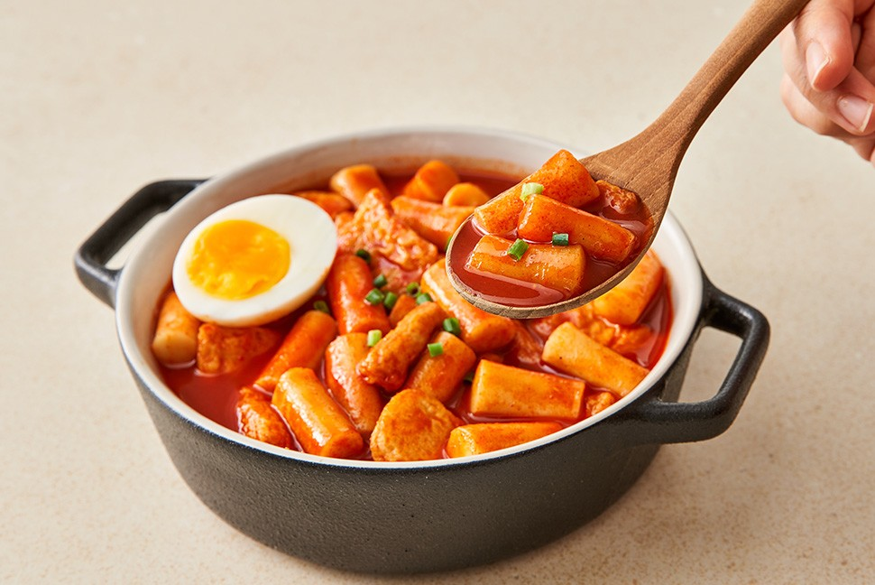

간단하지만 맛있는 떡볶이 만들기!

어린시절을 생각하면 빼놓을 수 없는 음식인 떡볶이!!
학교앞에서 천원으로 사먹었던 그 맛이 아직도 잊혀지지 않는데요
오늘은 그 추억을 가지고 집에서 만드는 간단하지만 맛있는 떡볶이 레시피를 알려드리겠습니다!!
준비재료
- 떡볶이 떡 300g (말랑말랑하게 찬물에 잠깐 담가두면 좋아요!)
- 어묵 2~3장 (먹기 좋게 썰기)
- 대파 1대 (어슷썰기)
- 물 2컵 (다시마, 멸치 육수면 더 맛있어요)
만드는 법!
- 냄비에 물(또는 육수) 2컵을 붓고 끓여요.
- 끓기 시작하면 양념장을 넣고 잘 풀어줍니다.
- 양념 국물이 끓어오르면 떡과 어묵을 넣고 5분정도 중불에서 끓입니다.
- 떡이 말랑해지면 대파를 넣고, 국물이 걸쭉해질 때까지 2~3분 더 졸입니다.
- 마지막에 기호에 따라 삶은 달걀, 치즈, 라면사리 등을 추가하면 더 맛있어져요!

이 레시피로 맛있는 떡볶이 만들어 드셨으면 좋겠습니다
그리고 만약 여러분들의 추억의 음식이 있다면 알려주세요!!
여러분들의 다양한 추억을 기대하고 있을게요~